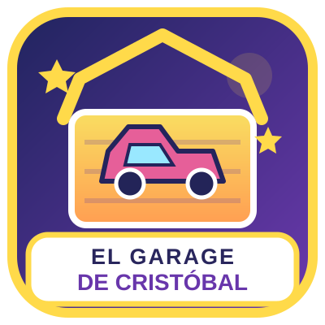

UN JUGUETE.
¡MIL AVENTURAS!
Explora juguetes increíbles que buscan nuevos compañeros de juego. ¡Encuentra tu próximo tesoro!
ELIGE TU PRÓXIMA MISIÓN
Explora nuestro inventario de pequeños grandes tesoros.
🔎 No encontramos juguetes con ese filtro. ¡Prueba otra búsqueda!
⚡ BATTLE ARENA
Algunos tesoros podrán participar en una subasta amistosa y supervisada.
¡Una oferta puede cambiarlo todo!
Los adultos vendedores pueden activar subastas con precio de salida, incremento mínimo y fecha de cierre. Solo ofertan adultos invitados con cuenta verificada; el cierre y los avisos se procesan en el servidor.
📡 TOY RADAR
¡Conoce tiendas familiares que comparten juguetes con una nueva aventura!
🛡️ Tiendas reales publicadas por adultos. La búsqueda funciona por comuna elegida voluntariamente; no compartimos GPS, direcciones ni distancias hasta los hogares.
📡 Nuestro radar
Ilustración del concepto de búsqueda. Los radios no determinan los resultados actuales.
Escala visual de ejemplo. Busca tiendas reales por comuna →
🏪 Tiendas reales descubiertas
Solo participantes reales de la base de datos que autorizaron aparecer.
Selecciona una comuna para descubrir tiendas reales.
Sin posiciones exactas. La conexión entre tiendas requiere una solicitud gestionada por adultos. No existe chat entre menores.
El radar circular es ilustrativo. Los resultados a la derecha corresponden a tiendas reales publicadas y con participación voluntaria en Toy Radar.
¿CÓMO FUNCIONA?
Escanea y explora
Encuentra los juguetes disponibles en el catálogo.
Elige tus favoritos
Agrégalos a tu selección para consultar por ellos.
Coordina con un adulto
Las reservas, pagos y entregas son supervisados.
Formas de pago
Esta familia indica cómo puede recibir el pago por sus juguetes.
🛡️ Los pagos y las entregas se coordinan entre adultos. Esta página no recibe dinero ni confirma reservas. Nunca transfieras antes de verificar los datos con el adulto responsable.
🏪 ¿Quieres crear tu propia tienda?
¿Tu familia también tiene juguetes listos para nuevas aventuras? Un adulto puede crear su propia tienda, elegir su nombre, subir juguetes y compartir un QR. Actualmente disponible solo con invitación para el piloto.